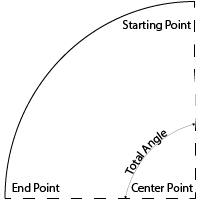

2018-08-12 Blog Post 1 - GeoArcs and Geometry
Introduction
in the dxf standard Arcs are defined in several different ways:
- Starting Vertex, Ending Vertex and a bulge value
- Center Vertex, Starting ray angle, ending ray angle and radius
- 3 vertices that the arc passes through, two at each end are the ends of the arc
This article is all about how to deal with arcs in their three different forms and how I was able to calculate all of the data from the dxf file.
Some background
An arc is a geometry curved line that is a segment of a circle. Note that there are different kinds of arcs this post will only talk about the circular arcs. I may in the future create a post on eliptical arcs.  Here is an example arc that has a starting point and an ending point. The total angle is measured between the ray of the starting point and the ray of the ending point. Thy center point is where the two rays meet.
Througout this documentation and post I will be using the following naming for the elements discussed
above. The starting point is vertex0, the ending point is vertex1, the total angle is angle, the center point
is centerPoint, the starting angle (The angle between vertex0 and the x-axis) is startingAngle and the
ending angle (the angle beteen vertex1 and the y-axis) is endingAngle.